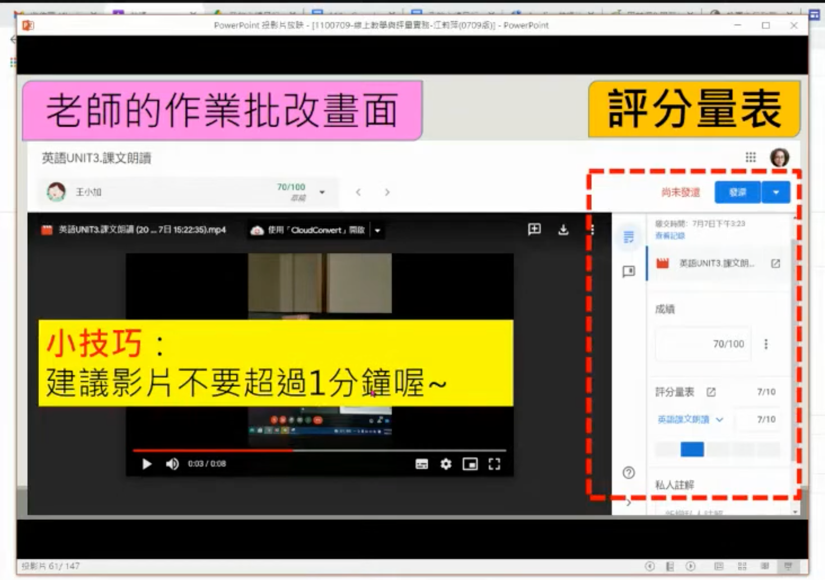
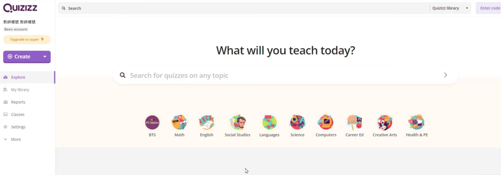

20230921數位教學與評量工具
Table of Contents
- 1. 演講內容
- 2. 前置作業
- 3. 數位教學與評量工具介紹(50分鐘)
- 4. 教學評量案例分享(90分鐘)
- 5. 大綱
- 6. 要講嗎?
- 7. 以後看
1. 演講內容
- 時間： 112年9月21日
- 140分鐘: 50(工具介紹) + 90(教學評量案例分享)
- 對象: 高雄市公私立國中教師，預估25人
1.1. 課表
Figure 1: 課表內容
2. 前置作業
- 填寫調查表
- 最常使用的教學平台
- 曾經在課堂中使用過哪些評量工具
- 加入Google Classroom的選課LINK
- 填寫每個老師目前登入的Email 第二節實作課時加入Google Classroom教師名單
- 還是要用padlet?
3. 數位教學與評量工具介紹(50分鐘)
3.1. 什麼是評量
多數數位教學都在討論怎麼教 應該要討論怎麼分析學生的學習成果，回頭修正教學
3.1.1. Measurement, Assessment and Evaluation
- Measurement interprets the situation numerically.
- Assessment is used to know the progression and evaluation is used for decision-making based on progression.
- Measurement is the quantitative assessment of educational outcomes.
- Evaluation is a continuous and comprehensive procedure.
- Measurement results in quantitative determination whereas evaluation makes a qualitative determination of the learner’s performance.
3.1.2. Assessment for learning
- 評量的目的在於促進學生學習
- 因為是為了促進學習，在過程中可適度提供協助或鷹架
- 如：教學網的作業
3.1.3. Assessment of learning
- 評量是為了評估學生的學習成效
3.2. 評量的目的
- 了解學生是否學會
- 了解教學、評量過程中，何處理要搭建鷹架幫助學生
- 了解課程設計與教學過程是否需要修正
3.3. 評量的類型
3.3.1. 形成性評量
在學習歷程中，對學生的 各種導向素養目標的表現 所進行的評量， 以促進學生學習
3.3.2. 總結性評量
針對素養學習目標是否達成 而 對學生表現的好壞程度有所評斷(評分) 所進行的評量
3.4. 我們要從評量中得到什麼?
3.4.1. 行政目標
- 交成績
- 理解學生的學習成效(教師教學成效)
3.4.2. 教學目標
- 促進學生學習
- 教師能理解有哪些概念要重教
- 學生能理解自已有哪些概念需要加強
- 理解有哪些人要重教
- 理解課程設計或教學方式是否應重新規畫
3.5. 評量的影響
評量的類型 -> 課程內容 -> 學生能力 評量越多元、學生能力越高
3.6. 如何跳脫傳統的評量手段與概念
3.6.1. 實作評量
/2023-09-14_14-22-00_2023-09-14_14-21-32.png) 實作評量的設計流程
實作評量的設計流程
Figure 2: 標題
/2023-09-14_16-04-05_2023-09-14_16-03-52.png)
Figure 3: 標題
Figure 4: 標題
/2023-09-14_16-08-00_2023-09-14_16-07-48.png)
Figure 5: 標題
Figure 6: 標題
3.6.2. 檔案評量
/2023-09-14_16-10-36_2023-09-14_16-09-58.png)
Figure 7: 標題
Figure 8: 標題
Figure 9: 標題
/2023-09-14_16-14-53_2023-09-14_16-13-15.png)
Figure 10: 標題
Figure 11: 標題
對於成果的自評、學生互評 下學期的計分應該採計這個做法
Figure 12: 標題
/2023-09-14_16-17-46_2023-09-14_16-17-34.png)
Figure 13: 標題
Figure 14: 標題
Figure 15: 標題
3.7. 各種評量工具的分析比較
/2023-09-15_13-55-08_2023-09-15_13-54-27.png)
Figure 16: 標題
3.7.1. Google表單測驗
題型自由度最高、學生可有可無帳號、可以網域限定帳號類型 有後台提供測驗結果分析
3.7.2. PaGamO遊戲測驗
遊戲性最高、可結合作業與測驗
3.7.3. Kahoot競賽測驗
有即時競賽&挑戰模式
3.7.4. Quizlet測驗
多功能線上筆記&測驗,小遊戲結合練習
3.7.5. 測驗系統比較
Figure 17: 標題
/2023-09-13_20-19-33_2023-09-13_20-18-09.png)
Figure 18: 標題
＊補充教材｜線上測驗參考操作影片集：https://pse.is/3m9qp7 ＊均一基礎操作常見問題短片教學：http://junyiacademy.piee.pw/3jda89 ＊歡迎老師加入均一官方 LINE 帳號 ，不漏接每一則均一課程推播喔！https://lin.ee/kxrXzUE
3.8. 評量工具體驗
學生體驗與成績分析
3.8.1. Kahoot!
3.8.2. Quizizz / Google Classroom
3.8.3. Google表單測驗
3.8.4. dpuzzle
3.8.5. Slido
3.8.6. Seesaw
3.8.7. Padlet
3.8.8. Moodle/VPL
3.8.9. SkyOJ
3.9. Google classroom
作業發送與配分
訊息串: LINE
/2023-09-16_15-21-45_2023-09-16_15-21-00.png)
Figure 19: 標題
訊息串上的作業: 聯絡簿
精簡通 知
/2023-09-16_15-24-21_2023-09-16_15-23-47.png)
Figure 20: 標題
學習成績配分
/2023-09-16_15-26-36_2023-09-16_15-25-14.png)
Figure 21: 標題
總分: 全部分數相加、依類別加權
Figure 22: 標題
增加課程成員
Figure 23: 標題
3.10. 作業評分量表
適作實作評量的評分
Figure 24: 標題
Figure 25: 標題

Figure 26: 標題
3.10.1. 測驗類作業(表單)
Figure 27: 標題
/2023-09-16_15-53-51_2023-09-16_15-53-31.png)
Figure 28: 標題
Figure 29: 標題
Figure 30: 標題
編輯表單
Figure 31: 標題
Figure 32: 標題
Figure 33: 標題
如果有非選題，要勾選「稍後公佈成績」，因為要手動閱卷。
/2023-09-16_18-54-18_2023-09-16_18-53-17.png)
Figure 34: 標題
如果一份測驗要給多個班用，可以建立副本
/2023-09-16_18-55-37_2023-09-16_18-55-02.png)
Figure 35: 標題
測驗表單在未公告或安排預施測時段前都算草稿
Figure 36: 標題
3.10.2. 問題：課堂中學生的互動問答
/2023-09-16_19-12-45_2023-09-16_19-12-20.png)
Figure 37: 標題
Figure 38: 標題
/2023-09-16_19-10-53_2023-09-16_19-10-39.png)
Figure 39: 標題
「問題」也可以用來當點名手段，可以預約實施
Figure 40: 標題
3.10.3. 資料
/2023-09-16_19-14-50_2023-09-16_19-14-23.png)
Figure 41: 標題
/2023-09-16_19-15-10_2023-09-16_19-15-03.png)
Figure 42: 標題
3.10.4. 重複使用訊息
用其他班級中的資料、表單、測驗….
Figure 43: 標題
/2023-09-16_19-17-06_2023-09-16_19-16-57.png)
Figure 44: 標題
3.10.5. 評分
/2023-09-16_19-18-33_2023-09-16_19-18-13.png)
Figure 45: 標題
教師可以看「待批閱」作業
Figure 46: 標題
/2023-09-16_20-06-53_2023-09-16_20-06-42.png)
Figure 47: 標題
/2023-09-16_20-07-10_2023-09-16_20-07-04.png)
Figure 48: 標題
/2023-09-16_20-07-35_2023-09-16_20-07-27.png)
Figure 49: 標題
3.10.6. 測驗結果分析
/2023-09-16_20-09-53_2023-09-16_20-08-50.png)
Figure 50: 標題
Figure 51: 標題
/2023-09-16_20-10-03_2023-09-16_20-09-26.png)
Figure 52: 標題
Figure 53: 標題
要按成績匯入才會進到學生資枓庫中(可分批匯)
Figure 54: 標題
拍照作業評分
/2023-09-16_20-59-20_2023-09-16_20-58-31.png)
Figure 55: 標題
Figure 56: 標題
3.10.7. 成績下載
/2023-09-16_21-02-46_2023-09-16_21-02-32.png)
Figure 57: 標題
Figure 58: 標題
Figure 59: 標題
/2023-09-16_21-06-36_2023-09-16_21-05-58.png)
Figure 60: 標題
Figure 61: 標題
3.11. Google表單
題型自由度最高、學生可有可無帳號、可以網域限定帳號類型 有後台提供測驗結果分析
- 可以裝Google Docs的add-on: form builder，將Google Docs自動轉為form builder
- 教師評量篇01 利用google表單測驗功能進行學習評量
- Google表單:線上即時回饋與互評！
- Google Drive，數位化資料的好幫手 圖片轉文字/語音轉文字(Google Keeps)
3.11.1. Google後台分析
/2023-09-13_08-46-33_2023-09-13_08-45-21.png)
/2023-09-13_08-46-43_2023-09-13_08-45-43.png)
3.11.2. Google線上測驗範本
/2023-09-17_12-50-58_2023-09-17_12-50-46.png)
3.12. 標準本位評量SBASA
3.12.1. SBASA
只有國小、國中 有提供教材包、有成績系統、有測驗分析
3.12.2. 影片
原來的評量標準
/2023-09-13_11-08-00_2023-09-13_11-07-51.png)
Figure 67: 標題
修改後
/2023-09-13_11-08-25_2023-09-13_11-08-14.png)
Figure 68: 標題
3.12.3. 資源示例
/2023-09-13_09-44-47_2023-09-13_09-44-25.png)
4. 教學評量案例分享(90分鐘)
4.1. 讓AI幫忙出考卷
4.1.1. ChatGPT
- 超強ChatGPT 外掛工具 AIPRM for ChatGPT 完全上手教學攻略
簡單來說，就是幫 CHATGPT 開掛，解開它被人類限定只能回答的基本常識問題，讓它能夠思考根據什麼需求，去創造適合的內容。直接看實際操作會更了解，AIPRM for CHATGPT 是在做什麼？
提供預設模板
- ChatDOC 中英文獻 PDF AI 摘要問答工具，可一次分析多份論文
比chatPDF更好用，主要是用來寫論文 可以用同一個問題叫AI去整理多篇文章 也就是說，不用再把教材內容貼到對話框中，可以直接上傳doc，再讓chatgpt去生資料
- ChatPDF怎麼使用？免費ChatGPT學習神器！一鍵光速讀完檔案、整理重點…幫報告、論文開外掛
- Chat YouTube 丟影片網址，就能向 AI 提問影片內容、做總結、以及其他你想知道的事情
/2023-09-16_21-42-05_2023-09-16_21-39-50.png)
Figure 71: 標題
Figure 72: 標題
/2023-09-16_21-42-15_2023-09-16_21-40-47.png)
Figure 73: 標題
Figure 74: 標題
七分鐘的課堂教學錄影，大概處理2分鐘
/2023-09-16_21-44-35_2023-09-16_21-44-26.png)
Figure 75: 標題
詢問影片重點
Figure 76: 標題
生成測驗
- 集合在Python中的数据类型是什么？
- List
- Set
- Dict
- Tuple
正确答案：B
- 集合可以进行哪些操作？
- 交集和连接
- 排序和更新
- 删除和修改
- 插入和查找
正确答案：A
- 集合与列表以及元组的不同之处在于：
- 集合是有序的
- 集合可以包含重复的元素
- 集合不能进行循环遍历
- 集合中可以存储键值对
正确答案：B
- 如何判断一个元素是否存在于集合中？
- 使用关键字 “in”
- 使用关键字 “not in”
- 使用索引值进行查找
- 使用函数 “contains()”
正确答案：A
- 下列哪个操作不适用于集合？
- 遍历集合的元素
- 查找集合的第一个元素
- 计算集合的长度
- 删除集合中的元素
正确答案：B
- 輸入文本、生成試題
選擇題或填充、簡答
- 紙本教材
先掃瞄或拍照、以Google Docs開啟、辨識成文字
4.1.2. 看文件出題
4.1.3. 看影片出題
4.2. 課前自學
4.2.1. Edpuzzle: 看影片：從影片中回答問題
- Edpuzzle影片自學評量好工具
edpuzzle的優點
/2023-09-14_07-02-49_2023-09-14_07-02-32.png) edpuzzle編影片方式
edpuzzle編影片方式
/2023-09-14_11-51-53_2023-09-14_11-50-49.png)
Figure 77: 標題
Figure 78: 標題
- 把課程變成超 Fun 的互動問答遊戲 Kahoot! 簡單易用讓全球上百萬老師愛不釋手
免費版: 50人 只有單選：複選要付費 可輸入數學公式 題目及選項都有字數限制
Figure 79: 標題
可以利用Powerpoint製作動畫，轉為GIF，在題目中製作動畫 可以由csv來批次上傳測驗內容 測驗也以加入投影片，要複雜版型要付費（也可以由powerpoint先製作好投影片，然後轉為圖片再插入基本的版型) 可以透過主題來讓測驗背景更生動 可以當成平常成績，或是依比賽結果來當加分依據 除了在課堂即時實施，也可以指派為作業 可以搜尋其他人做的測驗，建立複本
/2023-09-14_21-31-34_2023-09-14_20-53-18.png)
Figure 80: 標題
4.2.2. Kami: 看PDF: 從PDF回答問題
4.3. 形成性評量
- 上一堂的概念小測驗
- 本節的概念評量
4.3.2. Quizizz
- 介紹
- from 印度
- 優點：康軒有製作好的全套題庫,教師無需自行編輯題庫
- 線上教學💻善用Quizizz：遠端評量與課堂及時測驗一把罩
- 中階｜遠距教學心法：均一線上測驗與遠端評量工具(1:30:00以後)
/2023-09-13_21-10-14_2023-09-13_21-09-59.png)
Figure 81: 標題
出版社的題目
從CSV匯入
Figure 82: 標題
- [DEMO]在普通教室中實施的狀況:3分鐘 工具教學】大家都說Quizizz可以把考試變成遊戲？實際在教學現場中使用的效果如何？
分組合作實施
測驗的分類
在老師設定好的頁面點選Live game、選擇遊戲模式：
1.Team:學生各自答題，但得分來自整組表現
2.Classic：學生各自答題，得分也是獨立計算
3.Test：作答期間沒有額外的圖，且學生需要登入才能作答
有10個預設題庫
 可以直接使用出版社做好的試題: 例如康軒 google 康軒+quizizz

Figure 83: 標題
Figure 84: 標題

Figure 85: 標題
可以直接用，也可以複製編輯後再用
Classic: 即時測，自己控制進度 Instructor-paced: 由教師控制進度，適用時機: 教師師廣播題目，學生以電腦或手機、平板作答，全班同步 學生如何參加：Google Quizizz 或是以Google帳號先註冊登入Quizizz
Figure 86: 標題
強制請學生命名，沒名字沒分數 命名格式
 10302顏小帆
10302顏小帆
學生端能同時看到題目和選項 學生端可以馬上看到對/錯 教師可以即時看到每一題的作答狀況

Figure 87: 標題
教師由這裡控制全班測驗進度
Figure 88: 標題
也可以提前結束測驗(下課了)

Figure 89: 標題
測驗結束後，學生可以看到所有題目 老師可以看到所有學生

Figure 90: 標題
leaderboard是排行榜
測驗分兩類： 回家考 即時考
Quizizz簡介 要自己編題，有提供各種公式工具
Figure 91: 標題
可以一面自編、一面搜尋線上題庫加入測驗

Figure 92: 標題
4.3.3. Slido

Figure 93: 標題

Figure 94: 標題
Figure 95: 標題


4.3.4. PaGoMo
4.4. 課中的評量/作業
4.4.1. 程式作業: Moodle VPL
4.4.2. 實作類作品: Seesaw
- https://web.seesaw.me/
- 簡介(https://vtedu.mt.ntnu.edu.tw/uploads/1611022517150pv1bj4Lj.pdf) Seesaw為課程管理平台，平台版面清楚，有類似臉書社交網站互動功能老師可以發布課程所需教學檔案，學生可以上傳個人作業、小組作業，類別包含有：錄影、錄音、拍照、畫圖、筆記、小白板、網站連結等，學生還能夠以此做為個人課程的學習記錄，平台亦提供社交功能，如按讚(愛心圖示)、互給回饋、留言平台能保存學生上傳的各式學習資料，老師能將學生的資料用PDF格式下載存檔
- 可建立班級
- 學生可以代號或QR code登入
- 點選新增作品按鈕後，可選擇上傳的類別，如：靜態的相片、動態錄影，檔案也能整合google…等雲端硬碟，也可隨手塗鴉
- Journal：類似動態牆
- Activities：適用於教師指定活動或作業，教師可以看見學生繳交的情況，Activities中有內建一些學習活動，可以直接指派給班級學生進行練習(或當成指定作業)
- Blog：可以張貼與課程的相關的內容(此功能需由教師於Class Settings中開起，Blog需由教師開起才會顯示，如：至Class Settings中開起Blog功能，並設定Blog名稱為“infotech”,完成後此Blog網址就為：https://blog.seesaw.me/infotech
- INBOX: 可查看平台的通知訊息(包含各個活動記錄，按照時間序列顯示
- 多元評量蹺蹺板 Seesaw
- seesaw一個班最多150個人?
- 如何新增班級?可否由classroom匯入?
- 免費:10個班
- 沒有空間限制
- Student Sign-In Mode
- Class Code - Shared Devices 教室的載具不足每人一台(共用設備) 或是平板車，各班輪流用 學生在登入後要自己選組別
- Class Code - 1:1 Devices 一人一台，不用Email帳號登入
- Email/Google 要回家用
- 建立班級
建立學生名單
Figure 101: 標題
- Add a Student 可以一個一個
- Paste a list of student names 直接從試算表貼過來
- 班級特性
學生能否點讚 按讚要不要教師允許 學生能不否看到其他人的作業(測驗或作業,是否允許相互觀摩) 是否允許家長登入(Enable amily access): seesaw parent Enable class blog: 展示班級優良作業 Show add to folder: 作業分門別類，也可以設定優秀作品folder Save to camer roll: 存入載具相簿中
Figure 102: 標題
- 如何登出(如果用google帳號)
到ipad中的Safari清除所有瀏覽記錄，這樣Safari的Google登入介面就不會出現一堆
- Journal
類似日誌或是在臉書發表文章
 互評: 指定誰看誰的(透過Like/coment)
可以看影片作業
作業多元
互評: 指定誰看誰的(透過Like/coment)
可以看影片作業
作業多元
- Activities(作業)

Figure 103: 標題
作業 批改比google classroom方便(只能用文字，沒有分數，可以在Google classroom評分)

Figure 104: 標題
Figure 105: 標題
免費的作業只能放一頁
seesaw icon shortcuts

Figure 106: 標題
可以到community裡去找別人做好的資源
- Inbox
留言、公告(無法針對單一) 教師對學生的作品留言也是公開的 要有private note功能要付費: 所謂private指的是給另一個老師看，不是給學生看

Figure 107: 標題
- blog
當成作品展示空間 免費
- Progress(付費)
只有網頁版看的到 能看到全班進度

Figure 108: 標題
- my library
免費版最多放100個
- bug
一個班級最多2個老師 利用Fre 60 days瘋狂建task 事後再派送 一個任務也可以分成多個子任務(逃避收費問題)
- Seesaw pioneer
線上認證課程: 基礎
- Seesaw ambassador
線上認證課程: 應用，一個學校只能有1~2個教師(一年免費使用)
- Seesaw Certified educator
三年
4.4.3. Classkick
4.5. 實作評量
4.5.1. 課堂筆記: Hackmd.io
4.5.2. 期末專題: Padlet

Figure 109: 標題
4.5.3. 期中期末測驗: SKYOJ
4.6. 結語
這是個最好的時代、也是個最壞的時代 軟體工具這麼多，怎麼學的完 挑自己最熟的
5. 大綱
5.1. 作業繳交
5.1.1. MyET

5.1.2. PhET
PhET+因材網作業: 數位平台探究教學與評量(1:09:48) 評量是用因材網的單元診斷測驗
5.1.3. LUMIO
Figure 112: 標題
選取風格

Figure 113: 標題
排序類

Figure 114: 標題
配對題設計
Figure 115: 標題
選項也可以插入圖片() 最多10組選項
Figure 116: 標題
分類題型

Figure 117: 標題
Figure 118: 標題
遊戲輪盤
Figure 119: 標題

Figure 120: 標題
Figure 121: 標題
賽車型

Figure 122: 標題
- 教學模板

Figure 123: 標題
Figure 124: 標題
可取代黑板功能

Figure 125: 標題
Figure 126: 標題

Figure 127: 標題
Figure 128: 標題
Figure 129: 標題
- PhET模版
Figure 130: 標題
題型已設計成固定 但可以提供互動操作界面來作答 從測驗中學習
Figure 131: 標題
分數題型
Figure 132: 標題

Figure 133: 標題
可以現場出題 問題：學生是用自己的設備回答，或是用同一台電腦作答？ 看起來好像是用同一台設備
Figure 134: 標題
週長題型 有探索和遊戲類

Figure 135: 標題
探索類接近自主學習

Figure 136: 標題
Figure 137: 標題

Figure 138: 標題
函數模板
Figure 139: 標題
國中數學？？

Figure 140: 標題
5.1.4. Flipgrid
- https://info.flip.com/
- 一個讓教師透過建立數位社群、以短影片為工具，讓學生進行社交學習的應用軟體。每一位老師都可以在 Flipgrid 建立自己的教室，並在教室裡發布討論主題，學生可以透過製作短影片來分享自己的觀點，影片內容可以被教室裡的所有用戶看到，老師可以選擇開放影片的按讚、評論功能，這樣會帶來一定的競爭性，進而激發學生的積極性；而且每個教室都有密碼確保安全性，老師可以將密碼或者連結分享給自己的學生。
- FlipGrid是一個含社會學習（Social Learning）元素的平台，讓學生錄製功課討論。師生可以跨平台登入Flipgrid，不論身在家中或學校亦能錄製短片表達意見，促進協作學習。
7. 以後看
7.2. 因材網
7.2.1. 組卷、線上測驗
/2023-09-17_13-25-06_2023-09-17_13-24-52.png)
/2023-09-17_13-29-20_2023-09-17_13-29-11.png)
7.2.2. 因材網的任務
- 知識結構學習
指派影片學習任務
- 縱貫診斷測驗
類似數學跨年級下修測驗 這類測驗以能力指標為主 四則運算不會，可能是因為加法有問題
- 單元診斷測驗
一般考試
Figure 144: 標題
可以組卷、可以挑全班或各別學生指派
/2023-09-17_14-24-21_2023-09-17_14-23-43.png)
Figure 145: 標題
也可以跨班選學生 (應該要能加入條件選學生)
Figure 146: 標題
測驗任務細部設定
Figure 147: 標題
可以到任務維護去看是否指派完成
/2023-09-17_14-28-20_2023-09-17_14-27-56.png)
Figure 148: 標題
組卷
/2023-09-17_14-59-00_2023-09-17_14-58-40.png)
Figure 149: 標題
自組的考卷要先上鎖才能指派 上鎖後就不能再改內容，只能指派 因材網的概念：主教師只有一位，但可以任務權限開放給導師，也就是不允許有一個班有多個教師
- 素養導向試題
- 學力檢測考古題
7.3. 科殊需求評量
7.4. 素養導向評量(課設學院SSCD)
- 「素養(competency)」要從學生的「表現(performance)」中觀察
- 在某個情境中採取行動稱為「表現」
- 情境中出現問題或任務，才能採取探究行動
- 表現之後省思、調整與成長，逐漸形成素養